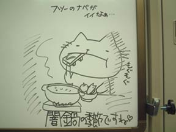

|
■2004/02/12/(Thu)23:08
どうやって開けるのか
|

なんかすごいものが出品されてますな。
写真は1年ぐらい前に、会社のホワイトボードに描いた落書き。
いっとき、私の席の近くにホワイトボードが置いてあったため、日々の想いを書き記していたのでした。
最近はホワイトボードが遠いので描きません。堕落〜。
闇鍋は過去３回くらいやってる。世の中で一人あたりの闇鍋回数を平均したら、３回は多いと思うのだがいかがなものか。
まーなにはともあれ闇鍋好き。
闇鍋したい！と言っても賛同する人が少なく、寂しい昨今です。
もうオトナだから闇鍋も豪華になりそうなのになー！
毛蟹まるごととか！松坂牛とか！キャビアなんか入れちゃったりして！
仕上げに金箔！
そんなオトナ闇鍋をしたい。
|
| |